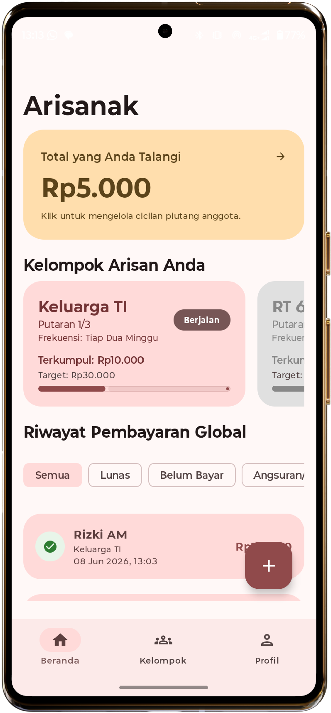
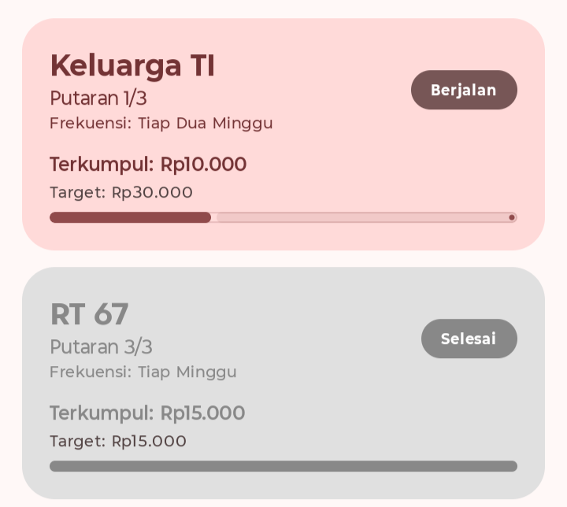
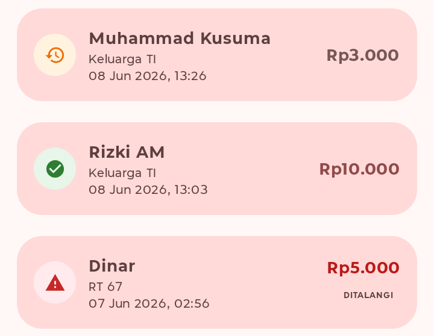

Arisanak menyederhanakan pencatatan arisan dengan disertai sistem pengundian (kocokan) dalam satu aplikasi. Jaga keuangan arisan Anda tetap aman dengan pendekatan local-first.

Arisanak menghilangkan kerumitan pencatatan finansial manual dan pengelolaan acara arisan tradisional.
Kelola anggota, catat iuran, dan lihat laporan kas secara rapi langsung dari ponsel tanpa takut datanya tertimbun chat.
Pengganti lintingan kertas manual, fitur pengundian nama yang memanfaatkan algoritma random number generator (RNG).
Semua data arisan tersimpan aman di memori perangkat keras Anda sehingga tidak perlu takut akan pengintai.


Membuat kelompok arisan, menambahkan anggota, mencatat iuran anggota, hingga mengundi pemenang putaran dengan adil, semua tanpa harus pindah aplikasi.
Buat kelompok arisan dengan iuran yang ditentukan dan tambahkan anggota melalui kontak.
Hubungi anggota yang belum bayar dengan fitur template chat yang dapat dikustomisasi.
Catat cicilan tagihan atau talangi tagihan anggota agar pengundian pemenang dapat dilakukan tepat waktu.
Undi pemenang putaran dan kabari kelompok atau kabari pemenang secara privat.
Lihat riwayat putaran arisan yang dapat dibagikan kepada kelompok sebagai file PDF.
Arsipkan kelompok arisan yang seluruh anggotanya sudah menerima tarikan.
Kelola arisan Anda sekarang juga tanpa ribet.